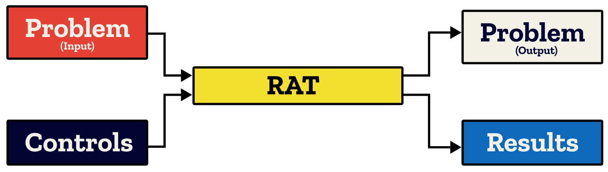
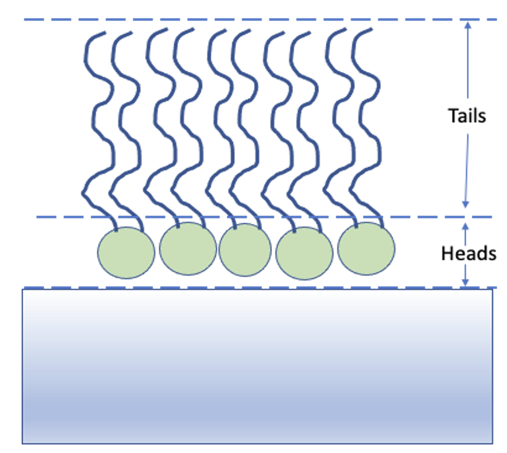

Introduction#
RAT is used to analyse reduced data; after an experiment has been performed and the raw data simplified into a more usable format (using a data reduction software such as Mantid), we can use RAT for the calculation, estimation, and fitting of quantities of interest.
The central RAT workflow centres around two objects:
A Project object, which describes our data, our models, the various parameters we may have along with their limits or priors, and other quantities such as bulk SLDs or backgrounds.
A Controls object, which summarises the actions which we want to do with our model. It specifies which algorithm we want to apply to improve our model fit, along with algorithm parameters such as maximum function evaluations, gradients, and parallelism options.
This decoupling is useful as it keeps the experimental model separate from the data analysis being performed upon it. Generally, one will define a single model and then run it with several different controls objects. For example, we may want to first optimise our parameter values for our model using a genetic algorithm, and then run a Bayesian analysis to obtain the posterior distributions for each parameter.
These inputs are passed into RAT to produce two outputs. The first is another model definition, which describes the same experiment as the input definition but with updated best-fit parameter values for parameters which we have chosen to optimise. The second is a results object which contains the results of the calculations, such as simulated reflectivities, SLD profiles or parameter distributions.
We will discuss these further in the next chapter, where we look at the inputs and outputs in more detail.
The code block below shows how to set up each object for each language, as well as how to run a calculation.
% Create project and controls objects
project = projectClass();
controls = controlsClass();
% Run after populating the project
[project, results] = RAT(project, controls);
import RATapi as RAT
# Create project and controls objects
project = RAT.Project()
controls = RAT.Controls()
# Run after populating the project
project, results = RAT.run(project, controls)
Note
If you are a RasCAL-1 user, you probably have existing RasCAL models that you would like to analyse using RAT. If so, there is no need to re-make the model from scratch. Instead, there are conversion utilities (Convert between RAT and RasCAL-1). In fact, for those who prefer a graphical model builder, using the RasCAL-1 GUI to build a basic model and then converting to RAT is a viable workflow.
An example - A simple model of a lipid layer#
Specifying the Model#
In the next chapter, we’ll look in detail how to set up the problem definition for a given situation. Here we will just use an existing example model to introduce how these objects are used in RAT. Our example data is neutron reflectivity data for a lipid monolayer (see image below), collected at various deuterations, which we want to analyse simultaneously.
In terms of reflectivity, the interface we want to model (i.e. a monolayer at an air-water interface) is usually well modelled by two layers: the hydrophobic tail regions of the lipids, which are outside the bulk water interface, and the hydrophilic heads which are adjacent (or embedded) in the bulk aqueous phase.
In our example, the layers can be either deuterated or hydrogenated, and the bulk water can either be D2O or ACMW.
{kind=link}
We are going to analyze our monolayer data using a standard slab model. In this model, we approximate our experimental model as a series of layers with a known thickness, roughness, SLD and hydration. The way that this is represented in the RAT model definition is by a list of Parameter objects which represent a given quantity (such as a thickness or SLD), and then a list of Layer objects which group together these parameters to describe each layer. Layers are then grouped together in a Contrast object which describes the slab model and matches it up to the experimental data to which the model will be compared. In this project we have two contrasts representing two slab models (one for our deuterated experiment, one for our hydrogenated experiment).
The code output below gives the full contents of a model definition for our experiment. After seeing it in full, we will break down each section of this definition and explain what it describes.
% Load in a pre-made problem Definition class
root = getappdata(0, 'root');
problem = load(fullfile(root, '/examples/tutorialFiles/twoContrastExample.mat'));
problem = problem.problem;
% Have a look at what we have
disp(problem)
problem = RAT.Project.load("source/tutorial/data/two_contrast_example.json")
print(problem)
modelType: 'standard layers'
experimentName: 'DSPC monolayers'
geometry: 'air/substrate'
Parameters: ----------------------------------------------------------------------------------------------
p Name Min Value Max Fit?
__ ________________________ ______ _______ _____ _____
1 "Substrate Roughness" 1 3 5 true
2 "Tails Thickness" 10 20 30 true
3 "Heads Thickness" 3 11 16 true
4 "Tails Roughness" 2 5 9 true
5 "Heads Roughness" 2 5 9 true
6 "Deuterated Tails SLD" 4e-06 6e-06 2e-05 true
7 "Hydrogenated Tails SLD" -6e-07 -4e-07 0 true
8 "Deuterated Heads SLD" 1e-06 3e-06 8e-06 true
9 "Hydrogenated Heads SLD" 1e-07 1.4e-06 3e-06 true
10 "Heads Hydration" 0 0.3 0.5 true
Bulk In: --------------------------------------------------------------------------------------------------
p Name Min Value Max Fit?
_ _________ ___ _____ ___ _____
1 "SLD Air" 0 0 0 false
Bulk Out: -------------------------------------------------------------------------------------------------
p Name Min Value Max Fit?
_ __________ _______ ________ ________ _____
1 "SLD D2O" 6.2e-06 6.35e-06 6.35e-06 true
2 "SLD ACMW" -1e-06 0 1e-06 true
Scalefactors: -------------------------------------------------------------------------------------------------
p Name Min Value Max Fit?
_ _______________ ____ _____ ____ _____
1 "Scalefactor 1" 0.02 0.23 0.25 true
Backgrounds: -----------------------------------------------------------------------------------------------
(a) Background Parameters:
p Name Min Value Max Fit?
_ __________________ _____ _______ _____ _____
1 "Backs Value ACMW" 1e-07 5.5e-06 1e-05 true
2 "Backs Value D2O" 1e-08 2.8e-06 1e-05 true
(b) Backgrounds:
p Name Type Source Value 1 Value 2 Value 3 Value 4 Value 5
_ _________________ __________ __________________ _______ _______ _______ _______ _______
1 "Background ACMW" "constant" "Backs Value ACMW" "" "" "" "" ""
2 "Background D2O" "constant" "Backs Value D2O" "" "" "" "" ""
Resolutions: ---------------------------------------------------------------------------------------------
(a) Resolutions Parameters:
p Name Min Value Max Fit?
_ __________________ ____ _____ ____ _____
1 "Resolution par 1" 0.01 0.03 0.05 false
(b) Resolutions:
p Name Type Source Value 1 Value 2 Value 3 Value 4 Value 5
_ ______________ __________ __________________ _______ _______ _______ _______ _______
1 "Resolution 1" "constant" "Resolution par 1" "" "" "" "" ""
Layers: --------------------------------------------------------------------------------------------------
p Name Thickness SLD Roughness Hydration Hydrate with
_ ____________________ _________________ ________________________ _________________ _________________ ____________
1 "Hydrogenated Heads" "Heads Thickness" "Hydrogenated Heads SLD" "Heads Roughness" "Heads Hydration" "bulk out"
2 "Deuterated Heads" "Heads Thickness" "Deuterated Heads SLD" "Heads Roughness" "Heads Hydration" "bulk out"
3 "Hydrogenated Tails" "Tails Thickness" "Hydrogenated Tails SLD" "Tails Roughness" "" "bulk out"
4 "Deuterated Tails" "Tails Thickness" "Deuterated Tails SLD" "Tails Roughness" "" "bulk out"
Custom Files: ------------------------------------------------------------------------------------------------------
Name Filename Function Name Language Path
____ ________ _____________ ________ ____
"" "" "" "" ""
Data: ------------------------------------------------------------------------------------------------------
Name Data Data Range Simulation Range
________________________ ______________________ _____________________ _____________________
"Simulation" "No Data" "-" "[ 0.0050 , 0.7000 ]"
"H-tail / D-head / ACMW" "Data array: [51 x 3]" "[ 0.0518 , 0.5888 ]" "[ 0.0518 , 0.5888 ]"
"D-tail / H-head / D2O" "Data array: [51 x 3]" "[ 0.0518 , 0.5888 ]" "[ 0.0518 , 0.5888 ]"
Contrasts: -----------------------------------------------------------------------------------------------
p 1 2
___________________ _______________________ ________________________
"Name" "D-tail/H-Head/D2O" "H-tail/D-Head/ACMW"
"Data" "D-tail / H-head / D2O" "H-tail / D-head / ACMW"
"Background" "Background D2O" "Background ACMW"
"Background Action" "add" "add"
"Bulk in" "SLD Air" "SLD Air"
"Bulk out" "SLD D2O" "SLD ACMW"
"Scalefactor" "Scalefactor 1" "Scalefactor 1"
"Resolution" "Resolution 1" "Resolution 1"
"Resample" "false" "false"
"Repeat Layers" "1" "1"
"Model" "Deuterated Tails" "Hydrogenated Tails"
"" "Hydrogenated Heads" "Deuterated Heads"
Name: ----------------------------------------------------------------------------------------------
DSPC monolayers
Calculation: ---------------------------------------------------------------------------------------
normal
Model: ---------------------------------------------------------------------------------------------
standard layers
Geometry: ------------------------------------------------------------------------------------------
air/substrate
Parameters: ----------------------------------------------------------------------------------------
+-------+------------------------+--------+---------+-------+------+
| index | name | min | value | max | fit |
+-------+------------------------+--------+---------+-------+------+
| 0 | Substrate Roughness | 1.0 | 3.0 | 5.0 | True |
| 1 | Tails Thickness | 10.0 | 20.0 | 30.0 | True |
| 2 | Heads Thickness | 3.0 | 11.0 | 16.0 | True |
| 3 | Tails Roughness | 2.0 | 5.0 | 9.0 | True |
| 4 | Heads Roughness | 2.0 | 5.0 | 9.0 | True |
| 5 | Deuterated Tails SLD | 4e-06 | 6e-06 | 2e-05 | True |
| 6 | Hydrogenated Tails SLD | -6e-07 | -4e-07 | 0.0 | True |
| 7 | Deuterated Heads SLD | 1e-06 | 3e-06 | 8e-06 | True |
| 8 | Hydrogenated Heads SLD | 1e-07 | 1.4e-06 | 3e-06 | True |
| 9 | Heads Hydration | 0.0 | 0.3 | 0.5 | True |
+-------+------------------------+--------+---------+-------+------+
Bulk In: -------------------------------------------------------------------------------------------
+-------+---------+-----+-------+-----+-------+
| index | name | min | value | max | fit |
+-------+---------+-----+-------+-----+-------+
| 0 | SLD Air | 0.0 | 0.0 | 0.0 | False |
+-------+---------+-----+-------+-----+-------+
Bulk Out: ------------------------------------------------------------------------------------------
+-------+----------+---------+----------+----------+------+
| index | name | min | value | max | fit |
+-------+----------+---------+----------+----------+------+
| 0 | SLD D2O | 6.2e-06 | 6.35e-06 | 6.35e-06 | True |
| 1 | SLD ACMW | -6e-07 | -5.6e-07 | -3e-07 | True |
+-------+----------+---------+----------+----------+------+
Scalefactors: --------------------------------------------------------------------------------------
+-------+---------------+------+-------+------+------+
| index | name | min | value | max | fit |
+-------+---------------+------+-------+------+------+
| 0 | Scalefactor 1 | 0.02 | 0.23 | 0.25 | True |
+-------+---------------+------+-------+------+------+
Background Parameters: -----------------------------------------------------------------------------
+-------+------------------+-------+---------+-------+------+
| index | name | min | value | max | fit |
+-------+------------------+-------+---------+-------+------+
| 0 | Backs Value ACMW | 1e-07 | 5.5e-06 | 1e-05 | True |
| 1 | Backs Value D2O | 1e-08 | 2.8e-06 | 1e-05 | True |
+-------+------------------+-------+---------+-------+------+
Backgrounds: ---------------------------------------------------------------------------------------
+-------+-----------------+----------+------------------+
| index | name | type | source |
+-------+-----------------+----------+------------------+
| 0 | Background ACMW | constant | Backs Value ACMW |
| 1 | Background D2O | constant | Backs Value D2O |
+-------+-----------------+----------+------------------+
Resolution Parameters: -----------------------------------------------------------------------------
+-------+--------------------+------+-------+------+-------+
| index | name | min | value | max | fit |
+-------+--------------------+------+-------+------+-------+
| 0 | Resolution Param 1 | 0.01 | 0.03 | 0.05 | False |
+-------+--------------------+------+-------+------+-------+
Resolutions: ---------------------------------------------------------------------------------------
+-------+--------------+----------+--------------------+
| index | name | type | source |
+-------+--------------+----------+--------------------+
| 0 | Resolution 1 | constant | Resolution Param 1 |
+-------+--------------+----------+--------------------+
Data: ----------------------------------------------------------------------------------------------
+-------+------------------------+----------------------+---------------------+---------------------+
| index | name | data | data range | simulation range |
+-------+------------------------+----------------------+---------------------+---------------------+
| 0 | Simulation | [] | [] | [0.005, 0.7] |
| 1 | H-tail / D-head / ACMW | Data array: [51 x 3] | [0.051793, 0.58877] | [0.051793, 0.58877] |
| 2 | D-tail / H-head / D2O | Data array: [51 x 3] | [0.051793, 0.58877] | [0.051793, 0.58877] |
+-------+------------------------+----------------------+---------------------+---------------------+
Layers: --------------------------------------------------------------------------------------------
+-------+--------------------+-----------------+------------------------+-----------------+-----------------+--------------+
| index | name | thickness | SLD | roughness | hydration | hydrate with |
+-------+--------------------+-----------------+------------------------+-----------------+-----------------+--------------+
| 0 | Hydrogenated Heads | Heads Thickness | Hydrogenated Heads SLD | Heads Roughness | Heads Hydration | bulk out |
| 1 | Deuterated Heads | Heads Thickness | Deuterated Heads SLD | Heads Roughness | Heads Hydration | bulk out |
| 2 | Hydrogenated Tails | Tails Thickness | Hydrogenated Tails SLD | Tails Roughness | | bulk out |
| 3 | Deuterated Tails | Tails Thickness | Deuterated Tails SLD | Tails Roughness | | bulk out |
+-------+--------------------+-----------------+------------------------+-----------------+-----------------+--------------+
Contrasts: -----------------------------------------------------------------------------------------
+-------+--------------------+-----------------------+-----------------+-------------------+---------+----------+---------------+--------------+----------+--------------------+
| index | name | data | background | background action | bulk in | bulk out | scalefactor | resolution | resample | model |
+-------+--------------------+-----------------------+-----------------+-------------------+---------+----------+---------------+--------------+----------+--------------------+
| 0 | D-tail/H-Head/D2O | D-tail / H-head / D2O | Background D2O | add | SLD Air | SLD D2O | Scalefactor 1 | Resolution 1 | False | Deuterated Tails |
| | | | | | | | | | | Hydrogenated Heads |
| 1 | H-tail/D-Head/ACMW | D-tail / H-head / D2O | Background ACMW | add | SLD Air | SLD ACMW | Scalefactor 1 | Resolution 1 | False | Hydrogenated Tails |
| | | | | | | | | | | Deuterated Heads |
+-------+--------------------+-----------------------+-----------------+-------------------+---------+----------+---------------+--------------+----------+--------------------+
1. The Parameters Group#
p Name Min Value Max Fit?
__ ________________________ ______ _______ _____ _____
1 "Substrate Roughness" 1 3 5 true
2 "Tails Thickness" 10 20 30 true
3 "Heads Thickness" 3 11 16 true
4 "Tails Roughness" 2 5 9 true
5 "Heads Roughness" 2 5 9 true
6 "Deuterated Tails SLD" 4e-06 6e-06 2e-05 true
7 "Hydrogenated Tails SLD" -6e-07 -4e-07 0 true
8 "Deuterated Heads SLD" 1e-06 3e-06 8e-06 true
9 "Hydrogenated Heads SLD" 1e-07 1.4e-06 3e-06 true
10 "Heads Hydration" 0 0.3 0.5 true
+-------+------------------------+--------+---------+-------+------+
| index | name | min | value | max | fit |
+-------+------------------------+--------+---------+-------+------+
| 0 | Substrate Roughness | 1.0 | 3.0 | 5.0 | True |
| 1 | Tails Thickness | 10.0 | 20.0 | 30.0 | True |
| 2 | Heads Thickness | 3.0 | 11.0 | 16.0 | True |
| 3 | Tails Roughness | 2.0 | 5.0 | 9.0 | True |
| 4 | Heads Roughness | 2.0 | 5.0 | 9.0 | True |
| 5 | Deuterated Tails SLD | 4e-06 | 6e-06 | 2e-05 | True |
| 6 | Hydrogenated Tails SLD | -6e-07 | -4e-07 | 0.0 | True |
| 7 | Deuterated Heads SLD | 1e-06 | 3e-06 | 8e-06 | True |
| 8 | Hydrogenated Heads SLD | 1e-07 | 1.4e-06 | 3e-06 | True |
| 9 | Heads Hydration | 0.0 | 0.3 | 0.5 | True |
+-------+------------------------+--------+---------+-------+------+
This block defines all the parameters that we need to specify our slab models. In our layers case, we
need 10 parameters to define our system: A bulk interface roughness, thickness and roughness for the headgroups and tails, and
SLD values for the layers, depending on whether they are deuterated or not. Each parameter has a given value, a fit field
which specifies whether they are included in the fitting algorithm, and min and max values indicating the minimum and maximum
value they can take in a fit respectively. There are also prior type fields which are used in Bayesian algorithms
to leverage prior knowledge about the model, but for non-Bayesian algorithms these fields are ignored. We will not use them here.
More information on Bayesian algorithms is available in the Bayes tutorial.
2. The Layers Group#
p Name Thickness SLD Roughness Hydration Hydrate with
_ ____________________ _________________ ________________________ _________________ _________________ ____________
1 "Hydrogenated Heads" "Heads Thickness" "Hydrogenated Heads SLD" "Heads Roughness" "Heads Hydration" "bulk out"
2 "Deuterated Heads" "Heads Thickness" "Deuterated Heads SLD" "Heads Roughness" "Heads Hydration" "bulk out"
3 "Hydrogenated Tails" "Tails Thickness" "Hydrogenated Tails SLD" "Tails Roughness" "" "bulk out"
4 "Deuterated Tails" "Tails Thickness" "Deuterated Tails SLD" "Tails Roughness" "" "bulk out"
+-------+--------------------+-----------------+------------------------+-----------------+-----------------+--------------+
| index | name | thickness | SLD | roughness | hydration | hydrate with |
+-------+--------------------+-----------------+------------------------+-----------------+-----------------+--------------+
| 0 | Hydrogenated Heads | Heads Thickness | Hydrogenated Heads SLD | Heads Roughness | Heads Hydration | bulk out |
| 1 | Deuterated Heads | Heads Thickness | Deuterated Heads SLD | Heads Roughness | Heads Hydration | bulk out |
| 2 | Hydrogenated Tails | Tails Thickness | Hydrogenated Tails SLD | Tails Roughness | | bulk out |
| 3 | Deuterated Tails | Tails Thickness | Deuterated Tails SLD | Tails Roughness | | bulk out |
+-------+--------------------+-----------------+------------------------+-----------------+-----------------+--------------+
Once we have our parameters, we then need to group these into layers. We have two slab models, each of which consists of a head and a tail at different deuteration levels. This means we require 4 layers total.
3. ‘Instrument’ Parameters: (Backgrounds, Resolutions and Scalefactors)#
There are tables for backgrounds and background parameters, resolutions and resolution parameters; alongside the scalefactors table. These describe parameters which are not directly part of our model, but part of our experiment, such as the background or resolution of the instrument, or scale factors to fix systemic errors in scaling (with respect to absolute reflectivity). We will not discuss these in detail here, but we will note that background parameters, resolution parameters and scalefactors are parameters just like the ones above, and can be fitted in the same way as part of our analysis (e.g. if the scalefactor is unknown and we would like to optimise it)!
4. Data#
Name Data Data Range Simulation Range
________________________ ______________________ _____________________ _____________________
"Simulation" "No Data" "-" "[ 0.0050 , 0.7000 ]"
"H-tail / D-head / ACMW" "Data array: [51 x 3]" "[ 0.0518 , 0.5888 ]" "[ 0.0518 , 0.5888 ]"
"D-tail / H-head / D2O" "Data array: [51 x 3]" "[ 0.0518 , 0.5888 ]" "[ 0.0518 , 0.5888 ]"
+-------+------------------------+----------------------+---------------------+---------------------+
| index | name | data | data range | simulation range |
+-------+------------------------+----------------------+---------------------+---------------------+
| 0 | Simulation | [] | [] | [0.005, 0.7] |
| 1 | H-tail / D-head / ACMW | Data array: [51 x 3] | [0.051793, 0.58877] | [0.051793, 0.58877] |
| 2 | D-tail / H-head / D2O | Data array: [51 x 3] | [0.051793, 0.58877] | [0.051793, 0.58877] |
+-------+------------------------+----------------------+---------------------+---------------------+
Each contrast must have a dataset associated with it, whether or not it contains data. An empty data object (i.e. containing no data and just a simulation range) means RAT will calculate the reflectivity only. When data is present, chi-squared goodness of fit will also be calculated. For our problem, we have two datasets and these are passed to the data block ready to be incorporated into contrasts.
5. Contrasts#
Once we have defined all the components of our model, we need to group them together into contrasts. We have two datasets
we want to consider, so two contrasts. We have the relevant instrument parameters, and also we specify which layers are included in each contrast (in the model).
p 1 2
___________________ _______________________ ________________________
"Name" "D-tail/H-Head/D2O" "H-tail/D-Head/ACMW"
"Data" "D-tail / H-head / D2O" "H-tail / D-head / ACMW"
"Background" "Background D2O" "Background ACMW"
"Background Action" "add" "add"
"Bulk in" "SLD Air" "SLD Air"
"Bulk out" "SLD D2O" "SLD ACMW"
"Scalefactor" "Scalefactor 1" "Scalefactor 1"
"Resolution" "Resolution 1" "Resolution 1"
"Resample" "false" "false"
"Repeat Layers" "1" "1"
"Model" "Deuterated Tails" "Hydrogenated Tails"
"" "Hydrogenated Heads" "Deuterated Heads"
+-------+--------------------+-----------------------+-----------------+-------------------+---------+----------+---------------+--------------+----------+--------------------+
| index | name | data | background | background action | bulk in | bulk out | scalefactor | resolution | resample | model |
+-------+--------------------+-----------------------+-----------------+-------------------+---------+----------+---------------+--------------+----------+--------------------+
| 0 | D-tail/H-Head/D2O | D-tail / H-head / D2O | Background D2O | add | SLD Air | SLD D2O | Scalefactor 1 | Resolution 1 | False | Deuterated Tails |
| | | | | | | | | | | Hydrogenated Heads |
| 1 | H-tail/D-Head/ACMW | D-tail / H-head / D2O | Background ACMW | add | SLD Air | SLD ACMW | Scalefactor 1 | Resolution 1 | False | Hydrogenated Tails |
| | | | | | | | | | | Deuterated Heads |
+-------+--------------------+-----------------------+-----------------+-------------------+---------+----------+---------------+--------------+----------+--------------------+
Running the Model#
As we discussed at the beginning of the chapter, the other input to RAT is a controls object, which describes the data analysis operation to use and any relevant settings such as algorithm-specific parameters, parallelism, and display settings. More detail on the controls object is available at A Closer Look at the Controls Class, but for this demo we will just make an instance of the default controls object:
% Make an instance of controls class
controls = controlsClass();
disp(controls)
# Make an instance of controls class
controls = RAT.Controls()
print(controls)
controlsClass with properties:
parallel: 'single'
procedure: 'calculate'
calcSldDuringFit: 0
display: 'iter'
resampleMinAngle: 0.9000
resampleNPoints: 50
+------------------+-----------+
| Property | Value |
+------------------+-----------+
| procedure | calculate |
| parallel | single |
| calcSldDuringFit | False |
| resampleMinAngle | 0.9 |
| resampleNPoints | 50 |
| display | iter |
+------------------+-----------+
By default, the Controls object specifies to run an Abelès calculation of the reflectivity for the model, and then uses that to calculate SLD profiles. In other words we are not asking RAT to do any kind of fit with our parameters. We can now pass our problem definition and controls classes to RAT to run the calculation:
[problem, results] = RAT(problem, controls);
disp(results)
problem, results = RAT.run(problem, controls);
print(results)
Starting RAT ______________________________________________________________________________________________
Elapsed time is 5.364013 seconds.
Finished RAT ______________________________________________________________________________________________
Starting RAT ───────────────────────────────────────────────────────────────────────────────────────────────────────────
Elapsed time is 0.001 seconds
Finished RAT ───────────────────────────────────────────────────────────────────────────────────────────────────────────
Here, we overwrite our original input class with the output by using the same variable name (problem) as an input and an output,
but you don’t have to do it this way.
As discussed above, the output of this run is an updated model definition (which in this case is completely identical to the input definition as we did not perform any fitting) as well as the results from our calculation. The results contain various output arrays:
reflectivity: {2x1 cell}
simulation: {2x1 cell}
shiftedData: {2x1 cell}
backgrounds: {2x1 cell}
resolutions: {2x1 cell}
sldProfiles: {2x1 cell}
layers: {2x1 cell}
resampledLayers: {2x1 cell}
calculationResults: [1x1 struct]
contrastParams: [1x1 struct]
fitParams: [3 20 11 5 5 6.0000e-06 -4.0000e-07 ... ] (1x15 double)
fitNames: {15x1 cell}
reflectivity = [Data array: [51 x 2], Data array: [51 x 2]],
simulation = [Data array: [51 x 2], Data array: [51 x 2]],
shiftedData = [Data array: [51 x 3], Data array: [51 x 3]],
backgrounds = [Data array: [51 x 3], Data array: [51 x 3]],
resolutions = [Data array: [51 x 2], Data array: [51 x 2]],
layerSlds = [[Data array: [2 x 3]], [Data array: [2 x 3]]],
sldProfiles = [[Data array: [182 x 2]], [Data array: [182 x 2]]],
resampledLayers = [[Data array: [1 x 3]], [Data array: [1 x 3]]],
calculationResults = CalculationResults(
chiValues = [278.33456632 463.11454139],
sumChi = 741.4491077056697,
),
contrastParams = ContrastParams(
scalefactors = [0.23 0.23],
bulkIn = [0. 0.],
bulkOut = [ 6.35e-06 -5.60e-07],
subRoughs = [3. 3.],
resample = [0. 0.],
),
fitParams = [ 3.00e+00 2.00e+01 1.10e+01 5.00e+00 5.00e+00 6.00e-06 -4.00e-07
3.00e-06 1.40e-06 3.00e-01 5.50e-06 2.80e-06 2.30e-01 6.35e-06
-5.60e-07],
fitNames = ['Substrate Roughness', 'Tails Thickness', 'Heads Thickness', 'Tails Roughness', 'Heads Roughness', 'Deuterated Tails SLD', 'Hydrogenated Tails SLD', 'Deuterated Heads SLD', 'Hydrogenated Heads SLD', 'Heads Hydration', 'Backs Value ACMW', 'Backs Value D2O', 'Scalefactor 1', 'SLD D2O', 'SLD ACMW'],
This contains the results of our calculations, including the SLD profiles and reflectivities calculated from our problem class.
We can now plot the output, either manually (by taking the relevant parts from the results array), or using one of the supplied plotting utilities:
figure(1); clf;
plotRefSLD(problem, results)
RAT.plotting.plot_ref_sld(problem, results)

We can see that our model is looking fairly sensible, but that our guess values for the parameters are pretty wide of the mark. Further analysis might include running a fit over some of our parameters using one of the other procedures available in the controls object.